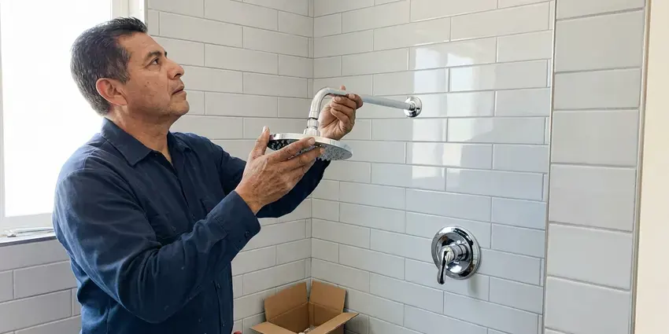

Sink Repair in Leavenworth, KS
For all your sink repair needs in Leavenworth, KS, you can rely on KRV Plumbing to restore your kitchen or bathroom plumbing.
- Same-Day Sink Repair Visits
- Guaranteed Work
- Honest Pricing
- Fast Local Service
Need Your Sink Repaired Promptly in Leavenworth, KS?
Our skilled technicians are ready to tackle any sink problem you're facing, delivering lasting results.
Your Go-To for Sink Repair in Leavenworth, KS
KRV Plumbing provides comprehensive sink repair throughout Leavenworth and surrounding areas in Kansas. Whether you have a dripping faucet, a slow drain, or a completely backed-up sink, our licensed plumbers have the tools and know-how to diagnose and fix the issue quickly.
Our expertise includes:
- Reset loose undermount and vessel basins with fresh sealant
- Clearing stubborn clogs in sink drains
- Replace leaking P-traps, tailpieces and slip-joint washers

Additional Bathroom Plumbing Services in Leavenworth, KS
From toilets to showers, our bathroom plumbing team in Leavenworth, KS handles repairs, installs, and upgrades with tidy, code-compliant work.


Customers
Why Choose KRV Plumbing for Sink Repair in Leavenworth, KS?
A small sink leak soaks particleboard vanities quickly and can hide mold behind the back panel. We fix the cause, test under pressure and leave the cabinet dry.
- Lasting Solutions, We don't just patch problems; we find the root cause to deliver a durable repair.
- Clean Work, We protect the vanity and countertop and haul away old parts.
- Stocked Trucks, Common traps, stoppers, valves and supply lines come along on every call.
Citywide Coverage
KRV Plumbing covers every neighborhood in Leavenworth for all your sink repair needs. From downtown to the farthest suburbs, our plumbing teams are always ready to dispatch quickly.
Experienced Team
Each KRV Plumbing technician is a specialist in diagnosing complex sink issues, making sure that your repair is handled by someone who truly understands the mechanics of your fixture.
Safety-First Approach
All sink repairs performed by KRV Plumbing strictly adhere to Kansas plumbing codes and safety standards. We ensure that every connection and component is installed correctly and securely.
Trusted Certified Leavenworth Plumbing Services Professionals
At KRV Plumbing, we take pride in providing licensed, certified plumbing services throughout Leavenworth, KS. Backed by leading industry credentials, our experienced plumbers combine technical skill with genuine customer care. Whether it is repair, installation, or maintenance, we follow strict safety and quality standards to deliver lasting results you can trust.
Call Us Now PHCC Plumbing Contractor Recognition
PHCC Plumbing Contractor Recognition Better Business Bureau (BBB) Accreditation
Better Business Bureau (BBB) Accreditation Angi Certified Pro
Angi Certified Pro ISO 9001 Quality Management Certification
ISO 9001 Quality Management CertificationProfessional Sink Repair Services in Leavenworth, KS
Loose or Cracked Basin Repair in Leavenworth
Undermount sinks are held by clips and epoxy that can let go, leaving a gap and a leak along the counter. Vessel sinks can rock on a worn mounting ring, and older porcelain basins can crack around the drain. We reattach, reseal or replace the basin as needed and recaulk with a mildew-resistant silicone. We will tell you plainly when a crack means replacement is the better value.

Bathroom Sink Repair in Leavenworth, KS
Bathroom sinks often develop issues such as slow drains due to hair and soap scum buildup, leaky pop-up assemblies, or loose faucet handles. KRV Plumbing provides targeted repair services for all types of bathroom sinks, including pedestal, wall-mount, and vanity styles. We can replace corroded washers, adjust drain stoppers, or fix supply line leaks, bringing your bathroom plumbing back to optimal condition. We make sure all repairs meet Kansas plumbing standards for residential properties.
Sink Water Pressure Issues in Leavenworth, KS
Low water pressure at your sink can be annoying and indicate underlying plumbing problems such as mineral buildup in the aerator, faulty faucet cartridges, or even larger issues within your home's water lines. Our technicians in Leavenworth, KS can accurately diagnose the cause of low pressure and implement the necessary repairs to restore full water flow to your sink.
Kitchen Sink Repair in Leavenworth
Kitchen sinks take heavy use, leading to common issues like garbage disposal clogs, leaky basket strainers, or worn-out sprayer hoses. KRV Plumbing specializes in diagnosing these specific problems, whether it's a cracked basin or a faulty P-trap. We can repair or replace components from brands like Moen, Delta, and Kohler, making sure your kitchen sink is fully functional and ready for daily demands. Our repairs are built to last, handling the tough demands of cooking and cleaning.
Supply Line and Shutoff Valve Repair in Leavenworth, KS
Braided supply lines and angle stops are rated for years, not decades, and the rubber inside breaks down in warm cabinets. A failing line can burst without warning and flood a bathroom. We replace worn lines with stainless braided connectors and swap stuck multi-turn valves for quarter-turn stops. It is a small job that heads off a very expensive one.
Pop-Up Drain and Stopper Repair in Leavenworth, KS
When the stopper will not close, will not open or lets water slowly escape, the pop-up linkage is usually to blame. The pivot rod nut can leak, the clevis strap can slip, and hair wraps around the stopper body. We clean or replace the assembly and adjust it so the lift rod works freely. If the drain body itself is corroded, we replace it with a matching finish.
Commercial Sink Repair in Leavenworth
Businesses in Leavenworth rely on functional sinks for hygiene and operations. Whether it's a restaurant kitchen, a salon, or an office breakroom, a broken sink can halt productivity. We offer prompt and efficient commercial sink repair services, understanding the urgency of getting your business back to full operation with minimal disruption. We handle heavy-duty commercial fixtures and complex plumbing systems.

Garbage Disposal Repair in Leavenworth
If your garbage disposal is jammed, humming but not grinding, or leaking, it needs expert attention. Our team in Leavenworth can troubleshoot and repair issues with all types of disposals, from brands like InSinkErator and Waste King. We can free jams, replace worn impellers, or fix electrical connections to get your disposal working safely again.
Reliable Sink Repair Near Me in Leavenworth, KS
When you search for sink repair near me, you want a plumber who shows up on time and fixes it once. Our trucks are already working in Leavenworth most days, so response times stay short. We call ahead with an arrival window and keep to it.
Our commitment to the Leavenworth community means we're never far away when you need expert sink repair. We understand the plumbing challenges faced by homeowners in Kansas, providing tailored solutions that last. Just give us a call at (316) 229-8459.
KRV Plumbing at a Glance
- Licensed and insured plumbers serving Leavenworth, KS
- 24/7 emergency service with same-day scheduling
- Clear written estimates, no hidden fees
- 4.9-star rated by 910+ Kansas customers
Leavenworth Map
Leavenworth Information
- Population
- 37,034
- Area codes
- Local
- Service area
- Leavenworth and communities within 40 miles
- Nearby
- Kansas City, Shawnee, Lenexa, Prairie Village
For homes in Leavenworth, KS, proper sink maintenance and timely repairs are crucial, particularly with mineral buildup and the potential for tree root intrusion into older drain lines, which can lead to frequent clogs.
Expert Services
Trust our professionals for reliable KRV Plumbing solutions in Leavenworth, KS.
Our Specialized Plumbing Services in Leavenworth, KS
At KRV Plumbing, we provide a complete range of plumbing services across Leavenworth, KS. From leak detection to full system installations, our team ensures fast, precise, and affordable service for both residential and commercial properties. Explore our core services below:


How Our Sink Repair Process Works in Leavenworth, KS
Here is what to expect from your first call to a clean, dry cabinet.
Request a Quote
Contact us at (316) 229-8459 or through our website to schedule your sink repair service. We'll gather information about your issue and set up an appointment that fits your schedule.
On-Site Diagnosis
Our skilled plumber will arrive on time, inspect your sink, and accurately diagnose the problem. We use specialized tools to identify hidden issues and explain the necessary repairs clearly.
Transparent Pricing
Before any work begins, you'll receive a clear, upfront quote for the repair. We believe in transparency, so there are no hidden fees or surprises, just honest pricing.
Frequently Asked Questions About Sink Repair in Leavenworth
The cost of sink repair in Leavenworth, KS can range from $150 to $450, depending on the complexity of the issue. Simple fixes like a leaky P-trap or a new aerator might be on the lower end, while extensive drain clearing or faucet cartridge replacement could be higher. We provide a written quote before starting any work.
Regular maintenance, such as using drain screens to catch food particles and hair, avoiding pouring grease down the drain, and occasionally flushing drains with hot water, can help prevent clogs. For garbage disposals, always use plenty of cold water and avoid grinding hard or fibrous materials. Periodic professional inspections can also catch issues early in your Leavenworth, KS home.
Generally, minor sink repairs like fixing a leak or replacing a faucet do not need a permit in Leavenworth, KS. However, if the repair involves significant alterations to the existing plumbing system, moving drain lines, or replacing entire sections of pipe, a permit may be necessary. We can advise you on any permit requirements.
We recommend against it. Caustic cleaners can damage older metal traps and seldom clear hair clogs completely. A hand auger and a cleaned stopper work better and are safer.
Replace it if the basin is cracked, chipped through the glaze, or badly etched, or if the drain is corroded into the bowl. Otherwise, repair is usually the smarter value.
Yes. Our labor is guaranteed and most replacement parts carry the manufacturer's warranty. We will explain the coverage on your invoice.
The most common causes are a loose or cracked P-trap, a failing supply line, or a leaking pop-up pivot nut. Less often it is the faucet body or the drain flange seal. We test each point to find the real source.
Yes, KRV Plumbing stands behind all our sink repair work with a comprehensive warranty on both parts and labor. We want you to have complete peace of mind knowing that your repair is done right and will last. Specific warranty details will be provided at the time of service.
What People Are Saying About Our Plumbing Experts?

Mark T.
When our office needed drain cleaning, KRV Plumbing provided quick, reliable service. The plumber arrived on time and made sure every drain flowed perfectly before leaving. Very satisfied.
Drain Cleaning · Leavenworth, KS
Robert G.
The trenchless sewer replacement saved our front yard. They walked us through the camera inspection footage first so we knew exactly what we were paying for.
Sewer Line Replacement · Lenexa, KS
Daniel K.
A pipe burst at 11 pm and they actually answered. The plumber showed up within the hour, shut everything down, and had us back to normal the next morning. Could not ask for more.
Emergency Plumbing · Lawrence, KS
Patricia H.
We had a slab leak that two other companies could not find. KRV Plumbing located it in under an hour, explained our options, and the price matched the quote to the dollar.
Slab Leak Repair · Leavenworth, KSJames P.
Our commercial plumbing system had a leak under the sink, and KRV Plumbing handled it professionally. The plumbers arrived quickly and restored everything without disruption to our customers.
Commercial Plumbing · Kansas City, KS
Emily R.
I called KRV Plumbing for plumbing repair, and the technician was fast, polite, and thorough. They explained the problem clearly and fixed it the same day. I will definitely hire them again. Highly recommended!
Plumbing Repair · Kansas City, KS